gitRmap Tutorial
A YouTube video of this process is available.
Have a GitHub account
To setup your own gitRmap, you need a GitHub account. Make sure you are signed into your GitHub account before starting.
Fork
- Go to https://github.com/nickbearman/gitRmap/
- Click
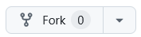
at the top of the page. - Give your map a name, or stick with the default
gitRmap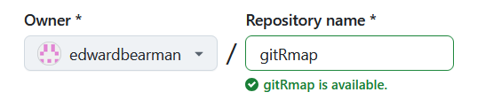
- Click
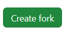
Setup GitHub Pages
- Click Settings > Pages
- Source should be set to Deploy from Branch
- Set Branch to
main - Set the folder to
/docs - It should look like this:
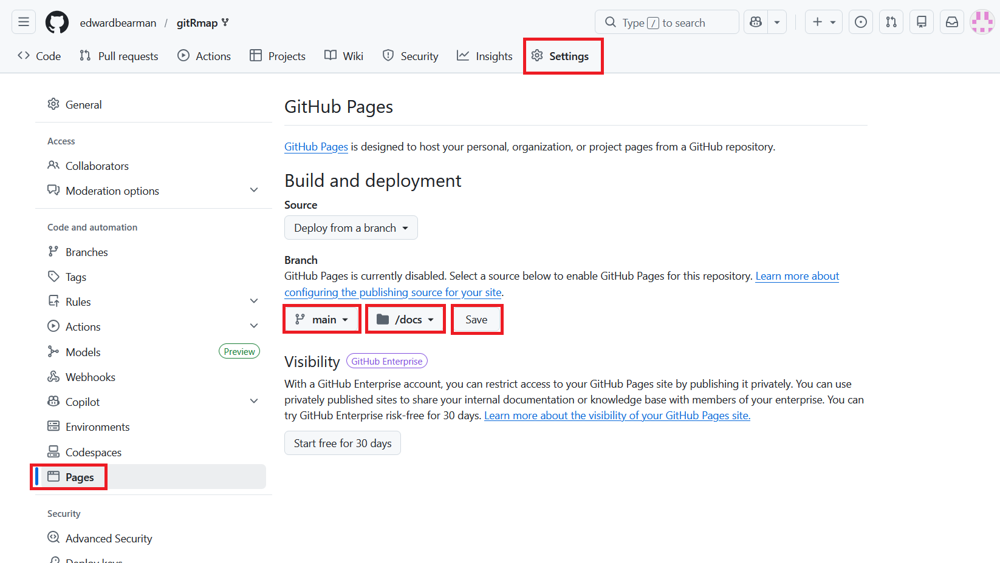
- Click Save.
Setup GitHub Actions
- Go to Actions
- Click I understand my workflows, go ahead and enable them.
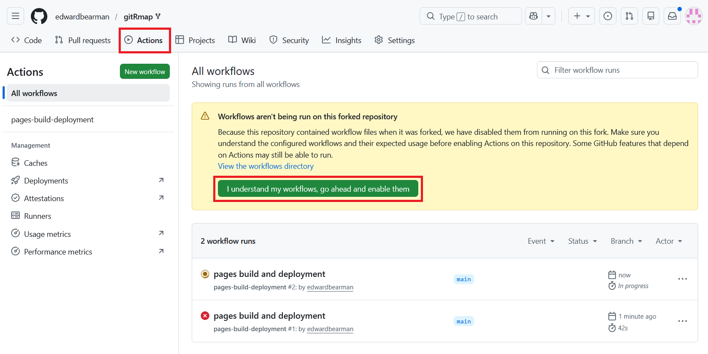
Update data/locations.csv
Edit the
locations.csvin thedatafolder to trigger the GitHub actions and run the R code to generate the map.Just to test everything is working, click Edit, and delete one of the rows.
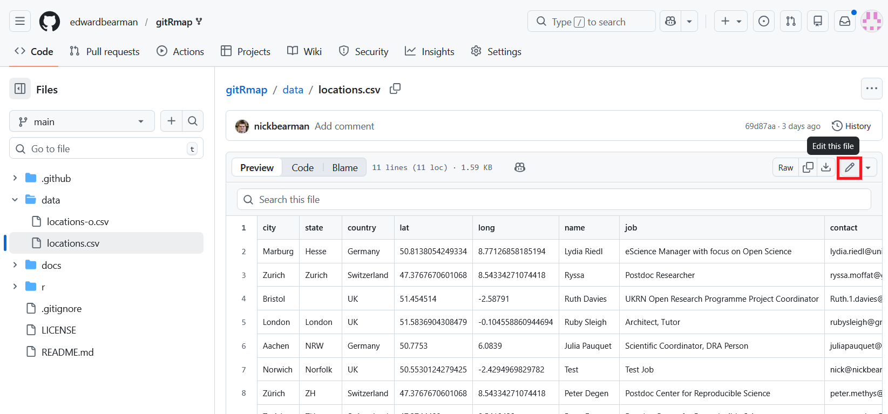
- Commit the changes as normal
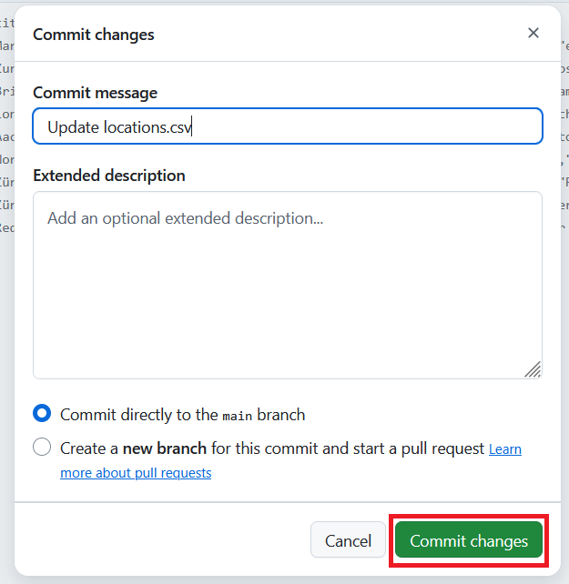
- More details on the options here
GitHub Action Running
- Go back to your repo home page. A brown dot next to the commit means the GitHub Actions is running:
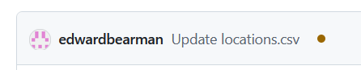
You can just let it run now. It shouldn’t take more than a minute to complete.
When it is finished, it will come up with a green tick:
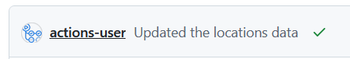
If you want to, you can get more details. Click on the brown dot and it will take you to the Actions tab.
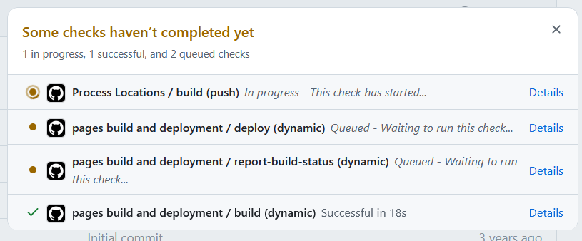
You can click on each job and it will tell you the details.
When it is complete, go to https://(username).github.io/gitRmap/ to see your map.
If you can’t find the link, click Settings > Pages. It will show you the address and you can click to Visit Site.
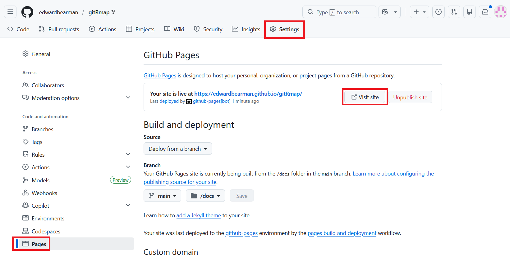
What do I do now?
Once you have the example map up and running, you have two things to do:
Update the
locations.csvfile to show the points on the map you want. Remember you only need to fill outcity,stateandcountry. Just leavelatandlongblank and R will automatically fill out the coordinates.Remove all the extra bits from
index.htmlso it just shows the map, or whatever you want. Also remember to update the page title! See the comments inindex.htmlfor more help.
What about popups?
to follow
Help! I got an error
If you get a red cross, it means something went wrong:
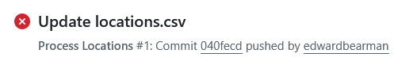
Do not worry! It is probably an easy fix.
Click on the name and it will take you to the Actions page:
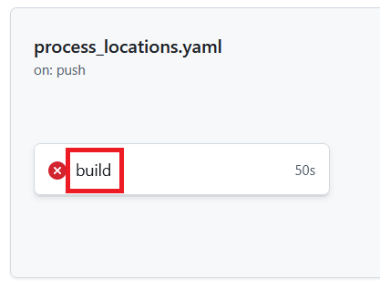
- Click on build and it will show you where the error was:
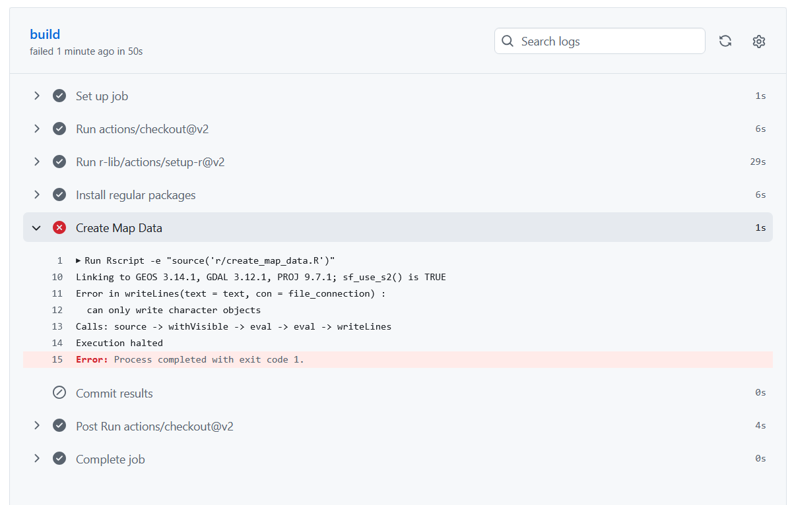
In this case there was a problem with the R code. I had to tweak the code and all was fine. Try working out the problem yourself. If you think it is a problem, please submit an Issue and I will have a look.
If you do get an error, and manage to solve it, you can edit locations.csv to re run the build, or you can go to Actions and click Re-run jobs > Re-run all jobs:
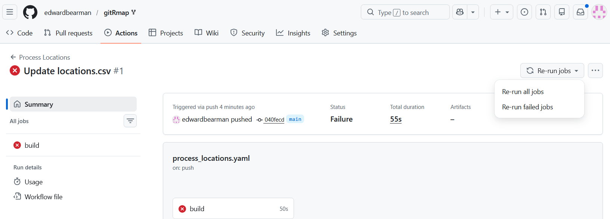
What about updates?
If I update the gitRmap repo, then you will get a message at the top of your repo saying This branch is 1 commit ahead of nickbearman/gitRmap:main. This means I have changed the code, but your fork doesn’t have that update.
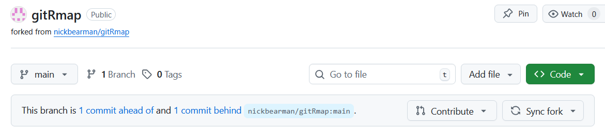
To get the update, click Sync Fork and choose Update branch:
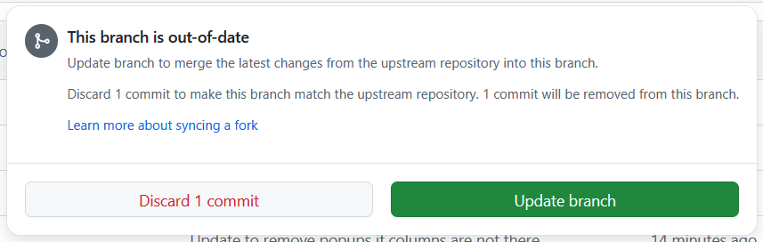
The new code will then be copied to your repo.